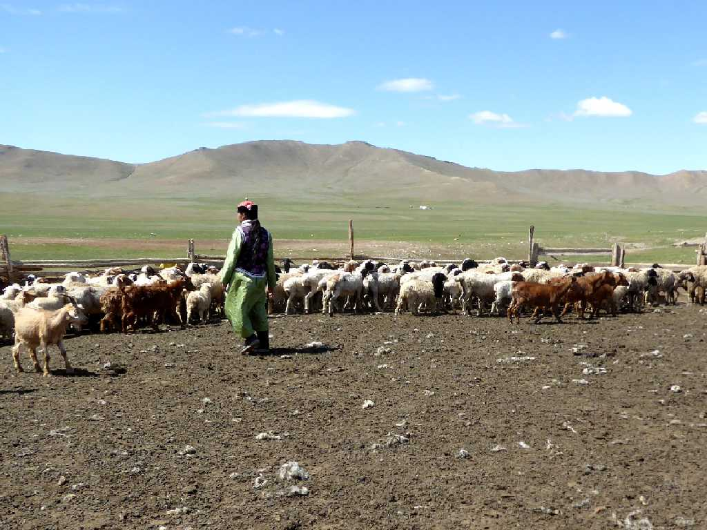
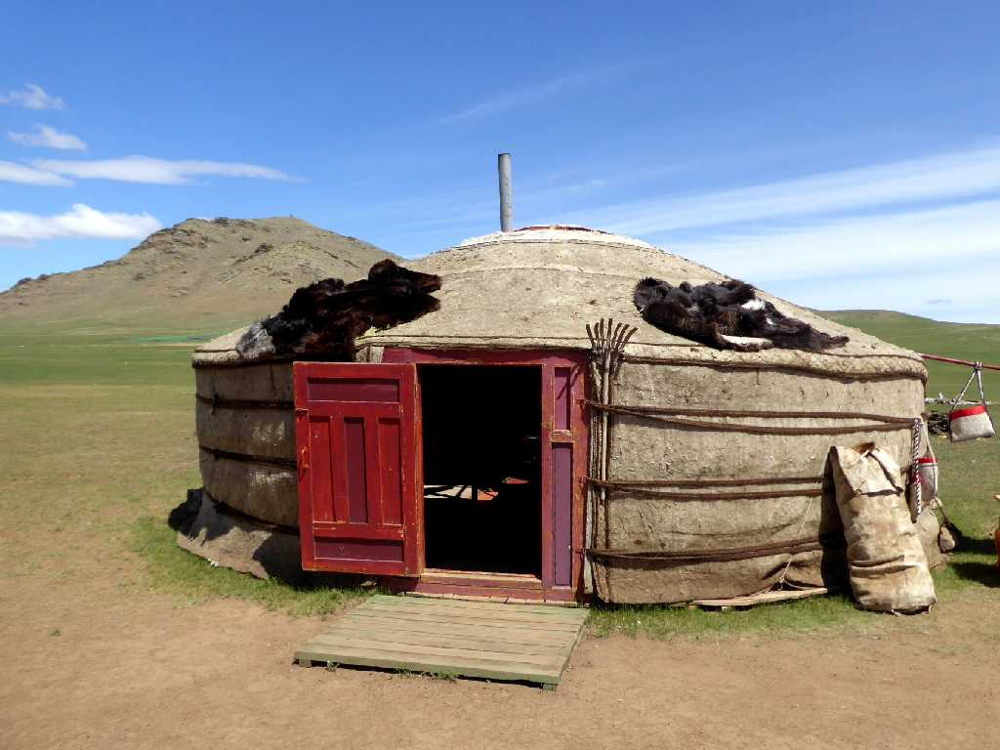
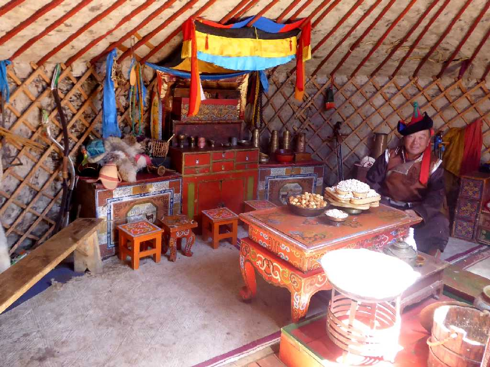
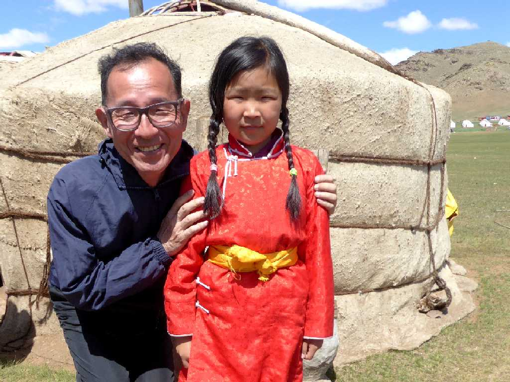
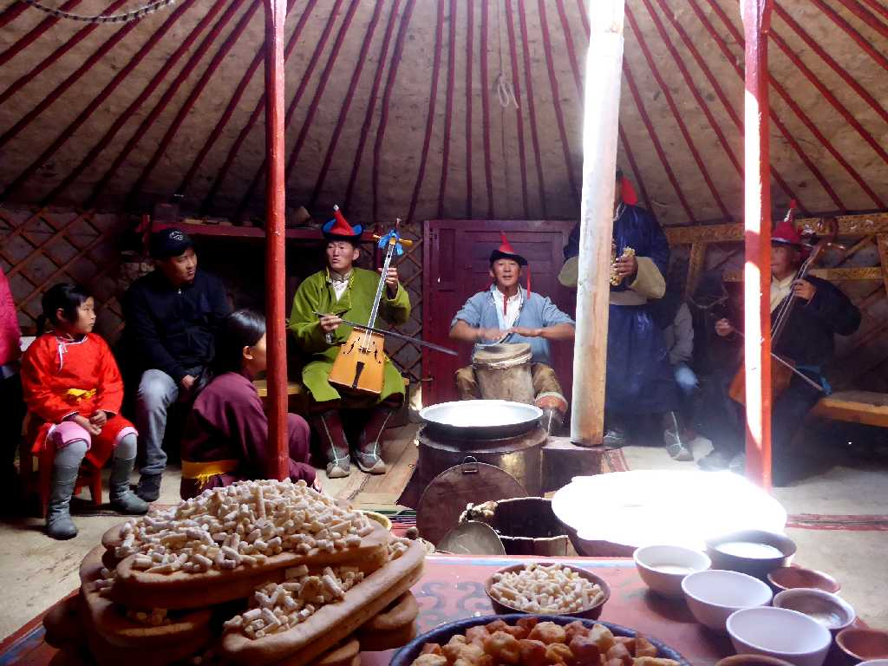
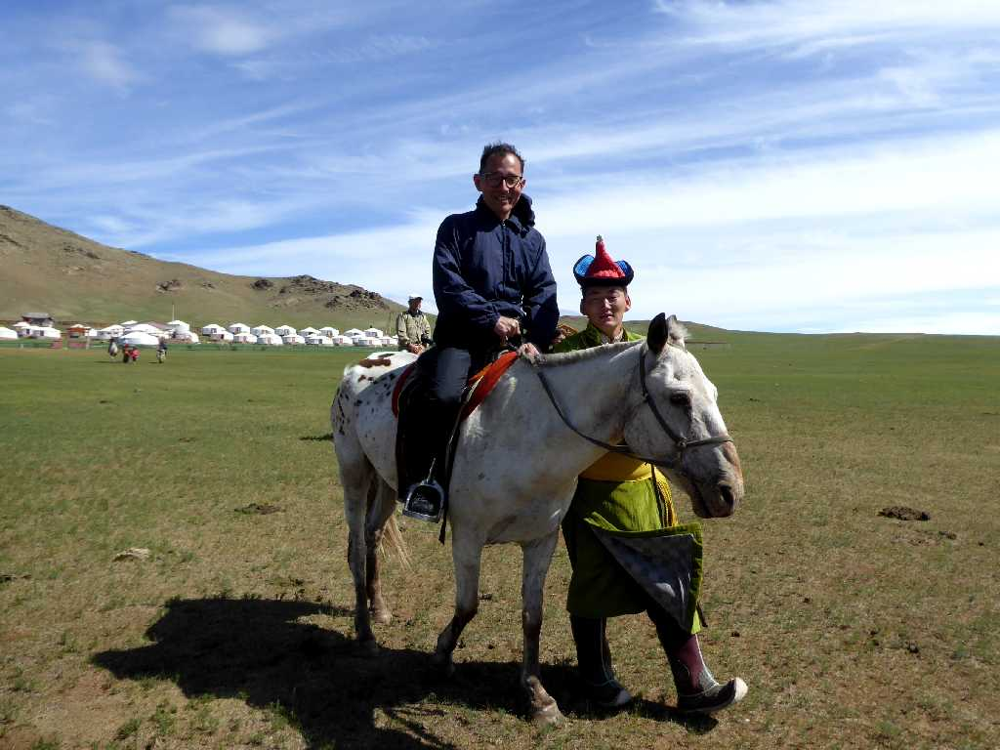

Grazing Land Bayantsogt
首都ウランバートルの西５０ｋｍに位置するバヤンツォグト近くの放牧地

The Old Ger
遊牧民は牧草などを求めて年４回ほど移住し住まいは組み立て解体が簡単に出来るケルで生活している昔ながらのゲル

Inside Ger
ゲル内を訪ね家長にご挨拶
Nomads
遊牧民のご家族

Nomad

Concert
遊牧民の歓迎の音楽

July 8 2017 Bayantsogt